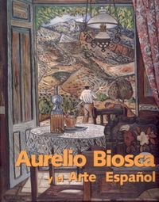

Artistas y exposiciones
Nombres, muestras y documentos que permitan reconstruir la actividad de la galería.
EN PREPARACIÓNMadrid · Desde 1940
Un espacio de memoria dedicado a Aurelio Biosca, a la Galería Biosca y a su lugar en la historia del arte español.
Descubrir su historia
“Conservar la memoria también es una forma de cultura.”
UN ARCHIVO EN CONSTRUCCIÓN01 / La galería
La Galería Biosca forma parte de la memoria artística de Madrid y de la historia del arte español del siglo XX.
Este sitio nace para reunir testimonios, publicaciones, imágenes y documentos relacionados con la galería, sus artistas y las personas que hicieron posible su trayectoria.
Queremos construir un relato documentado y abierto: una memoria que pueda crecer con nuevas aportaciones y materiales.
02 / La persona
Galerista y figura vinculada a una etapa decisiva de la vida artística madrileña.
La historia de la galería no puede separarse de la de Aurelio Biosca. Este apartado recogerá su trayectoria, su visión del arte y los testimonios de quienes le conocieron y trabajaron con él.
La biografía se ampliará a medida que incorporemos referencias documentales y materiales familiares.
03 / Memoria audiovisual
Entrevista emitida por TVE. El vídeo se reproduce desde YouTube y se inicia en el minuto 2:59.
04 / El archivo
Este archivo digital está concebido como un proyecto abierto de conservación y difusión de la memoria de la Galería Biosca.
Nombres, muestras y documentos que permitan reconstruir la actividad de la galería.
EN PREPARACIÓNImágenes, invitaciones, catálogos, recortes de prensa y otros testimonios.
EN PREPARACIÓNRecuerdos y materiales relacionados con Aurelio Biosca y la familia Biosca.
EN PREPARACIÓNGalería Biosca · Madrid